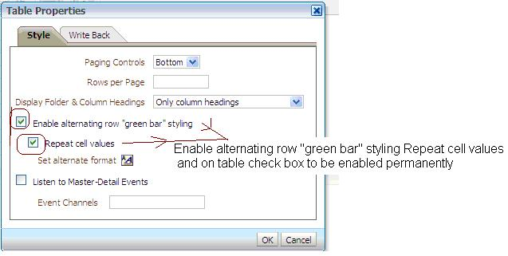
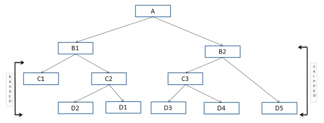

Oracle BIEE 经验总结
前言
使用biee开发前前后有也有两年多了，对oracle这套产品，也有一点小小心得，在此总结一下，抛砖引玉。持续更新中...
经验技巧 tips & tricks
为每个仪表盘标签页单独设置提示作用域！
编辑仪表盘－点击提示右上角的属性－范围－页／仪表盘 － 选用页即可。
physical layer 不支持with子句
如果你打算将： with tab as（ ） 这样的子句放到物理表视图中，那么rpd将会让你失望。因为rpd中的视图实质上是一个形如 select * from ( ) tab 的子查询。而如果你要将with放到子查询中，将会影响biee前端自动生成with 子句。如果你要用with子句写查询语句，简易先 create view yourviewname as 来建立一个视图，然后再在物理层中调用。
Session variable 可以放到物理层
你可以将VALUEOF(NQSESSION.RQVAR) 在物理层中引用Session Variable，然后通过在前端使用request variable来修改session variable的值。
BIEE的timestamp类型的日期运算：推算前n天，后n天，前n月，后n月等。
使用timestampdiff（）函数，可控制的粒度可以细到秒，粗到年！
利用biee的提示,将展示变量传递到会话变量
背景：
- 一个服务器变量 TABLE_NAME_INOUT，又叫 session variable , 对应前端是 request variable ， 该变量需要保存一个表名，该表名具有INOUT的特征。
- 在业务上，为业务人员设计了一个提示框，二选1，对于业务，是切换客户层级，而对于后台，是切换数据表。
- 关系梳理： 用户提示：客户层级切换 <—> 后台表名切换
- 需要在这中间 添加一个转换机制 ：输入 ： 储蓄/资产 ， 转换为 ： DPSIT/ASSET
设计：
-
rpd: NQ_SESSION.TABLE_NAME_INOUT
-
analytics 提示a设计：表示变量pv: 作为 转换到表名的输入。该提示a 不能设计为 请求变量， 否则传递无效。
-
analytics 提示b设计：请求变量：TABLE_NAME_INOUT , 列公式设计：
case when pv=‘xxx' then ‘dfadfa’ when pv =‘yyy’ then ‘dfads' end
-
注意事项: 如果 pv变量传递的是字符串，那么需要用 单引号引起来。如： ‘@{pv}’
-
define pv = ‘xxx’ ; define rqv = case when pv …. end
-
列公式不是必需的。可以用 ‘anychar’ 代替。
-
默认值的设置，一定要正确。
会话变量的使用 session variable usage
在rpd中
VALUEOF(NQ_SESSION.VARNAME)
在analysis 中
VALUEOF(NQ_SESSION.VARNAME)
结论是：两个场合的用法都是一样的！
其他tips：
- 默认值的填写： 如果是服务器变量，直接填写 : var_name , 不需要 valueof , 也不需要 nq_session
- 如果是 变量表达式：就是表示变量：格式：@{pv} 即可。有默认值也可以添加默认值。
BIEE分析报表的格式套用/批量设置解答：
-
把格式设置存为默认会发生什么？
如果把格式存为默认，那么系统中的所有报表都将会采用该设置作为默认值。例如，我们把一个整数列的格式设置为两位小数，那么对于其他报表，如果没有特别设置，都将采用该设置作为默认值。 2. 从已经保存的报表中借用格式，套用到新报表中，是怎么一个规则？
以下是官方说法：
Applying Formatting from Columns 官方链接 This functionality works best for views when attribute, measure, or hierarchical column numbers align precisely or for a single column template that can be applied to all columns. If a single column exists in the saved analysis, then its formatting is applied to all columns in the tables, pivot tables, and trellises of the target analysis.
For multiple columns, formatting is applied positionally, from left to right for column headings and values. A column that exceeds the number in the saved analysis gets the closest column's format repeated. For example, suppose the saved analysis contains four columns formatted with these colors in this order: red, green, blue, yellow. In the target analysis, its six columns would acquire these colors in this order: red, green, blue, yellow, yellow, yellow.
解析：
- 如果保存的报表只有一列,那么新报表的格式将全部采用那列的格式。
- 如果属性列，度量列和层级列的数量和对齐都是一致的，那么将会一一匹配。
- 如果列数不等，新报表列数多，那么新报表中不能匹配的列将重复最后一列。比如，4列老报表的列颜色设置为 红绿蓝黄，那么6列新报表的颜色为红绿蓝黄黄黄！
Oracle BIEE从开发迁移到生产时，如何处置修改配置这些麻烦事？
RPD 密码的修改
连接池越多，要改的密码就越多！你愿意每次投产，都要做这种没有技术含量，而风险又大的活？of course not ! 通过使用 admintool.exe /command 命令，通过配置的方式，修改密码，只需要执行批处理即可！
a. run.bat 批处理脚本：
set ORACLE_BI_LANG=en
set path=%path%;"C:\Program Files\Oracle Business Intelligence Enterprise Edition Plus Client 2 2\oraclebi\orahome\bifoundation\server\bin"
REM set ORACLE_HOME=C:\Program Files\Oracle Business Intelligence Enterprise Edition Plus Client 2 2\oraclebi\orahome
REM set ORACLE_INSTANCE=C:\Program Files\Oracle Business Intelligence Enterprise Edition Plus Client 2 2\oraclebi\orainst
REM set ORACLE_BI_APPLICATION=coreapplication
AdminTool.exe /command D:\poon\cases\rpd\PRDUCTION\AutoChangeAcct\prd.txt
b. prd.txt 命令内容：
// 离线打开rpd
OpenOffline D:\poon\cases\rpd\PRDUCTION\AutoChangeAcct\rpd001.rpd passwordhere
//设置连接池
SetProperty "Connection Pool" "1_5C"."5C_BIEEMGROPR" "DSN" "(DESCRIPTION=(ADDRESS_LIST=(ADDRESS=(PROTOCOL=TCP)(HOST=bieehost)(PORT=1528)))(CONNECT_DATA=(SERVICE_NAME=biee)))"
// 设置用户名
SetProperty "Connection Pool" "1_5C"."5C_BIEEMGROPR" "User" "bieemgropr"
//设置密码
SetProperty "Connection Pool" "1_5C"."5C_BIEEMGROPR" "Password" "passwordhere"
// 保存rpd
Save
weblogic －服务－数据源－中的 jndi 对应后台哪个xml配置文件？
${BIEE_HOME}/user_projects/domains/bifoundation_domain/config/jdbc/bieeds-jdbc.xml
另外，连接池url的格式为：
jdbc:oracle:thin:@ip_or_domain:port/sid
BIEE报表如何实现单元格绿白相间？
如图，在结果中，点击表属性。如图：

oracle biee try it live 的地址是？
2015-11-21 10:24
地址：
http://slc02ojq.oracle.com:7780/analytics/
帐号密码:
Prodney/Admin123
参考：
https://community.oracle.com/message/13342070
备注：
slc02ojq works slc02ojy works
slc02oky
slc02ojl fail slc02ojw fail slc02ojr fail slc02oka fail
odbc.ini 有什么用？
odbc.ini 是用户配置展示层到bi server层的数据连接的。我们知道，biee有展示服务，有bi service 服务，一个是展示层，一个是服务层。这两层数据之间数据如何通信？就是通过odbc数据源配置，使得biee的展示层能够存取后台数据库的数据。
服务器ip / 端口的修改
不要再用ip 了 ！ 赶紧改用域名把！ 把你的开发主机 的hosts 改一下，采用与生产环境主机相同的域名！就不用每次都把ip改来改去了。
biee 用户权限配置管理方面的case!
背景
在一个部门里，有几个业务员，其中有一个业务员很NB，他懂得自己开发报表。其他人想学他那样，但是自己又不会开发，所以软磨硬泡，要求他共享出来。这哥们的报表本来保存在个人文件夹里的，现在只能向管理员申请一个共享文件夹的目录，并且需要读写删等权限。而其他人，需要对这个目录具有打开查看的权限。这些访问用户该如何赋权？
方案
- 挨个用户按用户名赋权
对目录右键查找相应用户，直接赋权。
- 创建应用程序角色
为该共享目录创建应用程序角色，最后区分角色的权限，比如：
目录a读取权限角色 目录a修改权限角色 目录a删除权限角色 or 目录a管理员角色 目录a用户角色
biee filter( using ) 的使用！
- 需要字段在rpd做过聚合。
- 如果表在rpd层没聚合，在biee前台将无法使用filter，体现为：不sum就报错，sum了也体现不出效果, 跟直接sum，不用filter是一样的效果。
BIEE使用SESSION VARIABLE 根据柜员自动判断该展示哪些机构数据
背景
业务员要求柜员登录BIEE平台后，自动根据柜员身份判断哪些机构数据应该展示，哪些不让展示。具体如下：
- 总行的人，可以看全行机构的数据。
- 分行的人，只能看该分行的数据。
- 分支机构的人，只能看所属网点的数据。
可选方案
-
同步SSO单点登录数据，用 BIEE 侧的FACTTABLE 中的机构／用户 和 SSO单点登录中过来的机构／用户 匹配。 并在BIEE 侧维护一棵机构层级树。根据任意一个输入节点，取得后续所有节点，作为过滤条件，用过FACTTABLE的机构过滤。前提是：
1.SSO有和BIEE FACTTABLE 相匹配的机构信息。 2. 有组织机构树。
-
仅同步SSO单点登录的用户信息，以用户作为唯一输入，其他所有的逻辑，包括用户－机构关系，机构－部门关系等等，都在BIEE侧做。
由于实际的情况 既没有 机构可同步，也没有组织机构树，所以只能选方案2. 而事实上，方案2也是一种简便的方案。
方案设计
输入：
TELLER_ID 标识 ， 从SSO服务器同步，并存到 RPD 的 NQ_SESSION.USER 变量。
中间表：
TELLER_ID - DEPT_CD 映射关系。 也就是 柜员 － 部门的对应关系。（手工整理维护）
DEPT_CD - STD_ORG_ID 映射关系。 也就是 部门 － 网点 的对应关系。 （手工整理维护）
STD_ORG_ID --- ORG_ID 的对应关系。 因为 多个 ORG_ID 可能对应同一个 STD_ORG_ID 。
ORG_ID IN FACTTABLE RECORDS ， FACTTABLE 包含了 ORG_ID 信息。
根据上述映射表 ， 就构建了 ： TELLER_ID - ORG_ID - RECORDS 之间的关系。
也就是说，可以根据柜员，得到机构，再得到 对应的RECORDS 。
输出：
前台报表可以根据指定的柜员，展示指定的RECORDS。
实施方法和原理
- 在 RPD 定义一个 NQ_SESSION.USER 保存 SSO用户ID
- 在PYSICAL LAYER 创建一个视图，视图中的逻辑无论如何转换，都必须以 NQ_SESSSION.USER 作为输入， 以对应的结果集 全字段输出。形如： SELECT .... FROM FACTTABLE WHERE .... AND USER = 'VALUEOF(NQ_SESSION.USER)'
- 当用户登录时， 'VALUEOF(NQ_SESSION.USER)' 就会得到一个值。这个值可以决定了哪些数据应该展示，哪些不展示。而直接决定机构选取的，是机构和用户的对应关系，以及机构与机构之间的层级关系。
- 前端展示过滤器不用做任何设置。因为过滤条件已经在RPD的WHERE条件中设置了。
优劣分析
优点
- 所有的映射逻辑都可以SQL代码化。所有的配置只需要在RPD中完成。无需前端和DW层做任何设置。
缺点
- 所有逻辑都设置在RPD 层， 在生产环境修改起来比较费劲，基本上只能等下一个版本窗口，而无法通过前端修改。
跨部门报表共享
其实跟我们开发人员开发报表没什么区别。只是需要建一个与部门并列的目录，用于存放共享报表。如果涉及多部门，再在该目录划分。
再通过用户权限角色，把用户划分成一个个群体，挂接到相应的目录上。
然后通过 用户－组 配置工具， 为用户添加权限。
biee analysis 中的标题是可以填写 presentation 变量的。
同时，副标题也是可以写 展示变量、可以修改字体样式的。
还有：
-
不支持 空白间隔.
-
在analysis 中预览的时候，@{} 是不被解析的。
如何在点击导出的时候，一个excel sheet结果页面中，导出两个报表表格？
只需要在同一个分析中，构建两个表格或者视图。
biee报表没有数据的时候，如何定制系统输出? (无结果设置)
打开分析－标准－左上角－编辑分析属性（在过滤器右边的右边）－无结果设置－选择“显示定制消息”－填写页眉－填写消息－点确定完成设置。
常见的无结果提示：
```
无结果 ： 指定的标准未产生任何数据。
```
或者：
```
无结果 ： 指定的标准未产生任何数据。这通常是由于应用了限制性太强或者包含不正确的过滤器和／或选择引起的。请检查分析过滤器并重试。下面显示的是当前应用的过滤器。
```
以上两个提示的区别是：下面的告诉了没有数据的原因可能是过滤器设置的问题，而上面的没有。这有可能是由于一个报表没有设置过滤器，另一个报表没有设置产生的区别。
biee 如何通过下拉框按钮等提示工具切换不同的子页面和报表?
2015-12-02 Wed 12:39 PM
如果你有两张或多张报表，放在同一个仪表上，希望通过下拉菜单来实现报表之间的切换，应该如何实现呢？
我想到的方法是通过设置区域 的条件，来实现条件控制报表的显示和隐藏。
我们可以制定一个条件，当条件为真时，区域显示（当然也可以隐藏），其他报表隐藏，反之，改报表隐藏，其他符合条件的报表展示。从而达到控制简化页面布局，又能灵活展示所有信息的效果。
biee 提示： 日期类型 取 between valueA and valueB 时的默认值设置:
-
可以通过sql结果， 分别有两个框，可以填入sql来计算结果。
-
日期类型的 pv , 可以使用 in ( @{pv} ) 这样的语句。
-
日期取年初：trunc(date,'Y')
biee 的logical dimension 中的 Ragged 的应用场景
今天配置一张报表，并非每一条记录的层级数都相同。 就像这样：
```
lvl1|lvl2|lvl3|lvl4
lvl1|lvl2
lvl1|lvl2|lvl3
```
Ragged , 又叫 unbalanced ，非平衡维度. 也就是说，不是每一条记录的每一个维度都是整齐划一的。
如果你的维度表是这样的，就要在rpd中对你的逻辑维度做如下设置：
双击逻辑维度-> general-> structure-> Ragged
这样设置之后，如果你从lvl1 展开到 lvl4 , 也就是从最顶层展开到最底层, 那么如果当从lvl3开始，之后都没有层级划分的情况下，就不会报错。如果没有设置Ragged， 就会报错。
说到 ragged , 通常都会引出 skip-level . 下面介绍下 skip-level
biee skip-level 越级维度
就像这样:
```
lvl1|lvl2|lvl3|lvl4
lvl1|null|null|lvl4
lvl1|lvl2|null|lvl4
```
对于biee 不平衡维和越级维，这个帖子上有一张图可以说明:

http://prashanthobiee.blogspot.sg/2013/01/ragged-and-skipped-hierarchy.html http://docs.oracle.com/cd/E25054_01/fusionapps.1111/e20836/dimensions.htm
OBIEE 11g can handle this though with the new ragged and skip-level support for level-based hierarchies. It does this by detecting NULLs in either leaf levels (for ragged hierarchies) or other levels (for skip-level hierarchies) and use this to modify how the new hierarchical column type in Answers handles the missing levels.
biee 对于越级维和不平衡维的识别，是通过记录中空值(null) 的特点来识别的。
biee 创建 logical dimesion 的时候，什么时候使用 Level-Based , 什么时候使用 Parent-Child (value-based)
- 当层级关系都是同一类型的时候，我们采用Parent－child 。比如员工－上级。节点－父节点等结构。
- 当层级关系不是同一类型，比如地区－贷款类型－客户分类等等
此表 展示了一个 parent-child 表的代际关系。
当我们点击 ＋号 展开 biee 逻辑维度 (logical dimension ) 的时候，biee 后台 都发生了什么？
-
后台语句是随着我们的点击动态变化的。
-
展开的节点越多，语句就拼装得越多。
-
当展开下一级别的时候，会用我们所点击的节点的值作为条件，从一个最明细的子表中查询，查出该级别下的所有成员值。
-
每新展开一列，将会产生一个新的union , 把新展开的节点数据union 到已展开的节点上。
如何让biee 旋转透视图支持多个度量列？
把度量标签拖到右上方区域。
如何默认展开层级列（hierarchy column) ?
通过selection steps 步骤！ 详见：
http://123obi.com/2012/06/obiee-11g-expanding-hierarchy-column/
http://obieeil.blogspot.sg/2013/03/obiee-11g-hierarchical-columns-and.html
https://community.oracle.com/thread/2445861
http://www.rittmanmead.com/2010/07/obiee-11gr1-hierarchical-columns-and-enhancements-to-pivot-table-views/
物理层的多条件关联，也就是存在复合主键，是否影响逻辑层构建 logical hierarchy column ?
答案是： 不影响。 比如我们要构建 level-based hierachy , 可以随意构建我们需要的维度层级。
如何理解 structure based 和 value based ?
```
Parent Child Hierarchies Is a Value Based Hierarchy Level Base Hierarchies Is A Structure Based Hie.
```
我们可以根据最终构建出来的 hierarchy column 来理解：
parent - child 构建出来的 hierarchy colunm , 所有节点都是来自 父子两列的记录值。 所以说他是基于（parent-son 两列的记录）值来构建的。
而 level based 构建出来的 hierarchy colunm , 每一个层级都是来自不同的列（维度），展开的层次结构里面有几层，用以构建的维表就需要拿出多少列来构建。 所以说，他是基于（维表）结构来构建的。
biee 多instance 环境 隔离问题 ！
- rpd 不是我们要的rpd
通过 NQSConfig.INI 配置！
Start = TheOneYouWant.rpd
- catalog 不是我用的catalog
通过 instanceconfig.xml 配置 ！ 修改 表示目录！
也就是
pl/sql 版本差异导致的问题：
-
编码问题。 同一个脚本，如果plsql的客户端对编码处理不同，插进数据库的结果也可能不一样！
-
由于编码问题，对字符串的长度定义也不一样。同一个字符，不同编码，计算的长度也不同，有可能发生同一套编码，用不同版本的plsql插入，报长度错误等问题！
logical dimension 到底是什么？

如图，既然叫逻辑维，那就把它看成是一个维度就好了！但为什么一个维度会有那么多层级？
那么，请看：
我们可以记录这样一张表：
白色|4s|iphone
白色|5s|iphone
土豪金|5s|iphone
土豪金|6s|iphone
也可以这样记录一张表：
4s白色|iphone
5s白色|iphone
5s土豪金|iphone
6s白色|iphone
实际上，我们是把 颜色－型号两列组合在一起作为一列了。 作为一列展示的时候，我们还是可以区分层次关系的。
而且，既然我们可以组合两列，那我们还可以组合第三列、第四列.
所以，所谓的logical dimension ， 其实只是对几个维度的合并。并且能够让我们区分层次。 我们可以把它当作一个维度看待。
event table 是什么鬼 ？
http://docs.oracle.com/cd/E25178_01/bi.1111/e10541/querycaching.htm
http://gerardnico.com/wiki/dat/obiee/event_table
http://gerardnico.com/wiki/dat/obiee/event_table#define_the_table_as_an_event_table
物化视图
物化视图呢，用于OLAP系统中，当然部分OLTP系统的小部分功能未了提高性能会借鉴一点点，因为表关联的开销很大，所以在开发中很多人就像把这个代价交给定期转存来完成，ORACLE当然也提供了这个功能，就是将视图（或者一个大SQL）的信息转换为物理数据存储，然后提供不同的策略：定时刷还是及时刷、增量刷还是全局刷等等可以根据实际情况进行选择，总之你差的是表，不是视图。
刷新:
http://blog.csdn.net/joshua_peng1985/article/details/6213593
biee RPD 表关联的概念
driving table : small table , 一般小于千行, 用于biee 跨库查询的场合和 complex join 场合. driving table 适用于inner join,outer join。但不适用于full join 。当做inner join 时，driving table 的位置不区分。当做 left outer join 时，driving 应做左表。right outer join 时， 应做右表。我认为这只是业务无关,调优相关的情况下才这样指定。
lookup table :
base table : 又叫 fact table.
complex join : 所有非 pk-fk 方式关联 joins ， 都是 complex join 。
Complex joins are joins which have following diffrences from a PK-FK joins???. Complex joins can have conditional mappings like
,<,>=,NOT,AND,etc apart from '=' whereas the PK-FK joins are always '='
PK-FK joins are always (1-N), whereas complex joins can have (1 - 0,1) and (0,1 - N) kind of relationships.
Complex join:- complex join are used in physical layer in between two tables where ever that do not involved primary key and foreign key relationship.
Cardinality : In SQL (Structured Query Language), the term cardinality refers to the uniqueness of data values contained in a particular column (attribute) of a database table. The lower the cardinality, the more duplicated elements in a column. Thus, a column with the lowest possible cardinality would have the same value for every row. SQL databases use cardinality to help determine the optimal query plan for a given query.
另外： one - many 的意思是 1 行 对应 0行或1行或多行 这3种情况，而不只是多行。
biee中，cardinality 仅针对 complex join 。因为 PK－Fk 关联 ， 其 cardinality 是很明确的。
complex join 和 driving table 的使用有什么联系？
complex join 和 cardinality 的联系 ？
https://en.wikipedia.org/wiki/Cardinality_%28SQL_statements%29
cube
http://bbs.csdn.net/topics/390387960
http://www.2cto.com/database/201206/134968.html
http://blog.sina.com.cn/s/blog_70ba47f80100lhh5.html
biee 多 instance 注意事项
我们的环境有 2 bi server 3 ps ，首先要做的是资源隔离。其次要做的是锁定配置。
否则会出现资源冲突和配置混乱，重启就变化／还原／乱套的情况。
biee 报表中的逻辑维 (logical dimension ) 如何设置默认展开？
-
通过所选步骤展开。不推荐，因为这种方法展开之后，存在不能折叠回去的情况。还有 明明应该显示－号，结果显示了＋号的情况。
-
手工把所有节点展开，然后保存。下次默认打开就是上次保存的情况。支持折叠回去，不会有＋／－号显示错误的问题。 推荐。
biee 透视图如何去除表头标题空行？
打开透视图－编辑透视图－布局－行－行属性－选项－去掉勾即可。
biee 数据透视图如何 单独设置每页的行数？
打开透视图－编辑透视图－工具栏数据透视图属性－每页的行数－指定数值即可。
biee 的 logical dimension 如何指定展开的各节点的顺序？
-
需要维表中预设顺序列：seq1 , seq2 , seq3 ...
-
如果是level－based 的逻辑维，应该一个维度（一层）预设一个顺序列。
-
不同层之间共用一个顺序列seq，会发生父节点无法汇总的情况。
-
logical dimension 的排序算法是：数字类型－按顺序排。字符类型－先按长度，再按大小顺序排。
如何给biee 11.1.1.5.0 打补丁？( 使用 bp5 将 biee 升级到 11.1.1.5.5 )
待续
提示设计：再过滤器中使用 提示中的 展示变量 (presentation variable)
-
仪表盘中的提示设置为 日历类型 (date)
-
数据库中的日期列 为 char yyyymm 格式。
-
现在需要通过设定 date 提示来 达到 筛选 yyyymm 的效果。
解决方案：
-
将日期的传递统一转成 yyyymm 格式，再来比较。
-
使用 evaluate to_char（） 将 提示变量 pv 转换成 yyyymm 的char格式
-
让 2.的结果与 表中的日期字段相等。
-
注意 char 型字段 末尾是否有空格。有则需要截掉。
为什么我导出的的biee报表标题不完整，被截断了？
-
很可能你的报表名字是用中文来命名的。
-
一个中文，将会转化为 '%12%34%56' 这种形式的编码来传递参数。所以1个中文相当于9个ascii字符。
-
biee支持100多个ascii字符长度，但是如果是中文，就会大打折扣。
biee catalog 报表权限分配 ：
pms 应用程序角色 -> system-jazn-data.xml 角色配置 -> catalog 报表和应用权限角色挂钩
权限规则：
-
父级设置的权限，可以被子级的权限覆盖
-
如果一个目录权限被设置为 遍历，那么不管目录内的项目是何种权限，都不能打开查看。但是可以被程序调用。
异常处理 exception handle
Cannot read property 'itemsinfos' of null
http://www.rittmanmead.com/2012/08/obiee-fmw-and-networking-on-dhcp-hosts/
视图设计原则：
-
视图放在rpd
-
视图放在db
如何取舍？
如果涉及变量传递（会话变量），则放rpd，否则尽量放db。
现象： mac 下 chrome 无法访问 catalog 共享目录， 浏览器弹出窗口报这个错误。
解决： 这时浏览器兼容性的问题。网上建议: chrome 使用 ie tab 插件（我怀疑不行，因为mac下没有ie dll 之类的驱动。） 。或者： firefox ， 我测试过，非常好，非常快！
ref:
https://community.oracle.com/thread/2589688?start=0&tstart=0
ldap 7001 端口无法访问的问题！
起因：
我把原来桥接的 192.168.56.101 ip 改成了 nat ip ： 10.0.2.15 ！ 同时修改了hosts的ip －fqdn 映射关系！ 而 网卡是 dhcp 。
解决：
-
把虚拟网卡设置为固定ip , 网卡重启一下！
-
重启biee所有服务：ldap服务，weblogic 服务 ，biee opmn 服务！
-
不行的话，直接重启服务，重新来一遍！
我一开始只重启了网卡和biee opmn服务，没有效果。后来把机器重启了就好了！
[nQSError: 73006
Type: ERROR Severity: 10 Time: Sat May 31 02:18:48 2014 File: project/websecurity/odbcuserpoploaderimpl.cpp Line: 300 Properties: ecid- Location: saw.security.odbcuserpopulationimpl.initialize saw.catalog.local.loadCatalog saw.catalogcrawler.main
Odbc driver returned an error (SQLDriverConnectW).
State: HY000. Code: 10058. [NQODBC] [SQL_STATE: HY000] [nQSError: 10058] A general error has occurred.
[nQSError: 73006] Cannot obtain Oracle BI Servers from either the primary Cluster Controller (demo.us.oracle.com) or the secondary Cluster Controller () specified for the clustered DSN. (HY000)
biee服务器主机ip变更后，biee服务（weblogic、biserver） 无法启动。
2016-02-03 11:33
- 检查/etc/hosts 的ip－域名 对应关系。
- 把ip－域名 关系update成最新的ip，域名不变
- 重启服务器
nQSError:46118 磁盘空间不足
原因： biee 检测到 安装目录所在分区空间不足。
解决： 清理磁盘空间。
例如：
缓存。
日志。
这些文件通常在 ./instance1/diagnostics , /instance1/tmp/ , user_projects/domains/ 下。
bug report : biee analysis 创建报表内筛选的弊端：
-
加载速度慢－－因为需要一个数据加载和去重的过程。
-
会有报表纪录数据不全的情况。本来有100条的，可能只展示了10几条。
所以，不推荐使用 表提示！! 应该尽量使用仪表盘提示！
ora-32034:unsupported use of with clause at OCI call OCIstmtExecute.
解决办法：检查rpd物理层子查询中是否有with子句。有的话，改成子查询的形式。
nqserror:43119 nqserror:42039: report 总计函数的by子句中的列必须在选择列表中。
该异常我理解为：select dim... report_sum( measure by dim... ) from table ... dim... 没有对应上！
如何排除该异常：把视图中exclude掉的字段，试验性地添加到include列中。如果你不希望挪上去的列展示出来，再把该列设置为隐藏即可！
biee catalog 指向 不正确如何解决？
修改 instanceconfig.xml , 将
加载的rpd 不是我们想要的repository ， 怎么改成我们要的rpd?
修改 NQSConfig.INI
Star = yourRPDname.rpd , DEAULT;
仪表板报表爆表了怎么办？
分析－结果－编辑视图－编辑图形属性－比例－比例和限制－最大值：把最大值调到最大业务实际值以上。
如果rpd通过前端em上传的，通常会出现rpd名字被修改，导致引用不正确的情况。
求助：biee 11.1.1.5.0 打补丁到 11.1.1.5.5 之后，报表导出不再自动合并，如何解决？
求助： biee 创建用户后，无法登陆的问题？
在pms 中新创建了用户，却无法登陆，不知道是什么原因？
2015-12-13 17:45
也就是说：原来用未打补丁的版本，报表导出来的时候，如果相邻的两行或多行的值是一样的，就会自动合并。相当于excel 中的合并功能。 但是biee打补丁到 11.1.1.5.5 之后，就不再自动合并了。我的理解是，原来自动合并是biee的bug，现在修复了。但我还是希望能找到方法，打开biee的行合并功能。 有知道的亲们，请赐教，谢谢！
根据这个帖子，说是bug. 在 11.1.1.6.7 版本中都没有解决...
https://community.oracle.com/thread/2536758?tstart=0
logical dimension 父节点不能自动汇总？即子节点之和不等于父节点。
可能是rpd 中 每一层的排序设置有问题。最好每一层单独设置排序字段，不要共用一个排序字段。
logical dimension 展开到最后一层报错。
可能是rpd 中 展示层的层级设置得比较多。可以减少展示层中的层级，只取我们要的层数。比如：
逻辑层设置了 : lvl1 - lvl2 - lvl3 - lvl4 - detail
但在展示层中，我们可以只设置如下几层：
lvl1 - lvl2 - lvl3 - lvl4
这样，当我们在前台点击 lvl4 时，就不会继续展开。
行业动态
biee 12c 发布啦!
2015-12-15 17:07
有虚拟机可以下载！ 详见:
http://www.oracle.com/technetwork/middleware/bi-foundation/obiee-samples-167534.html
同行参考
http://gerardnico.com
一个wiki，站长非常有经验。一度认为是oracle官方开发人员！
http://123obi.com
一个印度人的biee相关网站。10g/11g 都有涉及。
http://www.obiee247.com
Berry van den Heuvel | Business Intelligence Specialist | NL
http://obiee-tips.blogspot.sg
该博hack风格比较浓。
http://joeferna.blogspot.com/
一个oracle独立顾问。erp,dba,obiee 等。印度人 from Goa
http://majendi.blogspot.com
obiee siebel 领域的人才市场情况、询价。工作机会等。
http://www.rittmanmead.com
神级 biee 专家。很多产！
http://obiee-blog.info
专注于biee 的博客 。
http://tipsonobiee.blogspot.com
这个博客跟得上节奏哦
http://obieeil.blogspot.com
http://dr-obi.blogspot.com
不仅限于 howto.
内容丰富翔实。
https://bicoach.wordpress.com
虽然更新不怎么频繁，但是有意外惊喜。
http://obiee-freelancer.blogspot.com
To brief you, i am a DW & BI Freelancer. A qualified Bachelor of Engineering in Information Technology experienced with the latest trends and techniques of the field, having an inborn quantitative aptitude, determined to carve a successful and satisfying career in the IT industry.
http://bidirect.blogspot.sg
BI Apps, Exalytics,Advanced and Predictive Analytics & Big Data
又是印度人
http://justbusinessintelligence.blogspot.com
印度人
http://itconsultingjobs.blogspot.com
如题，猎头服务。 更新也比较及时。
知己知彼
tableau
qlikview
大家都卖多少钱？(时薪)
http://www.guru.com/d/freelancers/q/obiee/
oracle consultants blog
keyword: obiee freelance consultant site:blogspot.com
http://iloveoracle.com
a guy teach u how to become an oracle independent consultant
http://andrejusb.blogspot.sg
I'm Oracle ACE Director, CEO and Independent Oracle Consultant at Red Samurai Consulting with focus on Oracle Fusion Middleware and SOA technologies.'
https://richardfoote.wordpress.com
https://blogs.oracle.com/certification/
oracle 官方认证 的博客
https://richardfoote.wordpress.com
很干货、很务实的博客。 从2007年一直以来都有更新
http://www.redstk.com/
该博客有很多关于biee 12c 方面的教程。
业内人物推荐
Andrew C. Oliver
疑问和学习
double column
measure labels
calculated items
收集器 collector
biee 创建透视图的几个问题记录
- 没有sum() , count() 等聚合函数作用到度量的表，生成的透视图，会把所有字段的都当作维度处理。一旦度量列被拖到度量标签区域，数据无法展示。为空。这时，要对度量列添加聚合函数。
- 透视图和表的区别： 透视图严格区分维度和度量。 透视图可以把维度列值作为表头。也就是纵表转横表。
将百度经验和百度百科作为微信公众号的宣传窗口&渠道！
内容尽量基础、简单、易懂。
BIEE 对字段A自定义多个格式，并以字段B作为条件，只能定义一次，如果解决？
- 复制字段B，生成多个一模一样的字段B1，B2，B3...
- 不要添加B1,b2,b3..到排查列表
- 以以b1,b2,b3...为条件，定义A的格式...
biee 透视图，小记／总计 标签 的修改 ！ 使用 @ 符号！
使用catalog manager 来输出 catalog 中所有的仪表盘、分析、提示等路径，
有需求要获取每一张报表的路径。而且报表是中文的。
第三方可视化
http://sigmajs.org/
NQSESSION 在rpd 中无法获取默认值。
采用 nvl!
物理层 的 with 不能放在开头，但是可以嵌入在中间
但这仅仅在物理层可以，在biee前台analysis中就不行了！报 with 使用不当！
物理层自动选择 connection pool
biee 数据源选择
biee前端 根据 current_date 求 T-1
select TIMESTAMPADD(SQL_TSI_DAY,-1,CURRENT_DATE) FROM "YOURSUBJECTAREA"
WINDOWS 休眠命令
rundll32.exe powrprof.dll,SetSuspendState
2016-05-03 19:06
活在别人的期望里，太傻！
2016-05-09 09:29
条形图
分组方式：
单月／累计 月名 X轴yyyymm
X轴的顺序很重要，
Tweet
Comments !